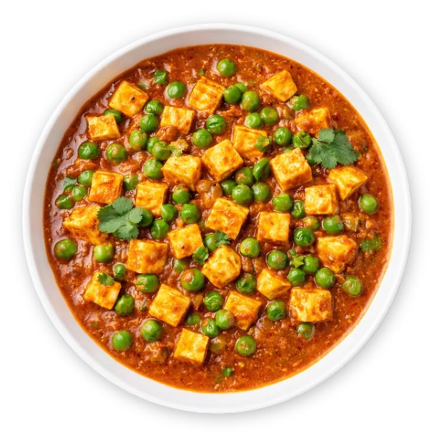

Matar Paneer
Ingredients
- 200 g paneer, cut into cubes
- 1 cup green peas (fresh or frozen)
- 2 medium onions, finely chopped
- 2 medium tomatoes, pureed
- 1 tsp ginger-garlic paste
- 1-2 green chillies, finely chopped
- 1/2 tsp cumin seeds
- 1/2 tsp turmeric powder
- 1 tsp red chilli powder
- 1 tsp coriander powder
- 1/2 tsp cumin powder
- 1/2 tsp garam masala
- 1/2 tsp kasuri methi
- 2 tbsp fresh cream (optional)
- 2 tbsp fresh coriander, finely chopped
- 2 tbsp oil or ghee
- 1 cup water
- Salt to taste
Instructions
- Cut the paneer into medium-sized cubes. If using firm paneer, soak the cubes in warm water for 10-15 minutes to keep them soft.
- Heat oil or ghee in a pan. Add cumin seeds and let them splutter. Add the chopped onions and sauté until they become soft and lightly golden.
- Add ginger-garlic paste and chopped green chillies. Sauté for another minute until the raw aroma disappears.
- Add the tomato puree along with turmeric powder, red chilli powder, coriander powder, cumin powder, and salt. Mix well.
- Cook the masala over medium heat until the tomatoes are completely cooked and the oil begins to separate from the mixture.
- Add the green peas and mix them well with the prepared masala. Cook for 2-3 minutes.
- Pour in the water and bring the gravy to a gentle boil. Cover and simmer until the peas are tender and the gravy reaches your preferred consistency.
- Gently add the paneer cubes to the gravy. Mix carefully so that the paneer does not break.
- Add garam masala and crushed kasuri methi. Simmer for another 3-4 minutes so the paneer and peas absorb the flavors of the gravy.
- Add fresh cream if desired and mix gently. Cook for another minute and turn off the heat.
- Garnish with freshly chopped coriander and serve hot.
- Enjoy Matar Paneer with roti, naan, paratha, or steamed basmati rice.
